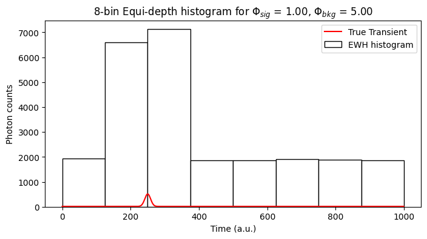
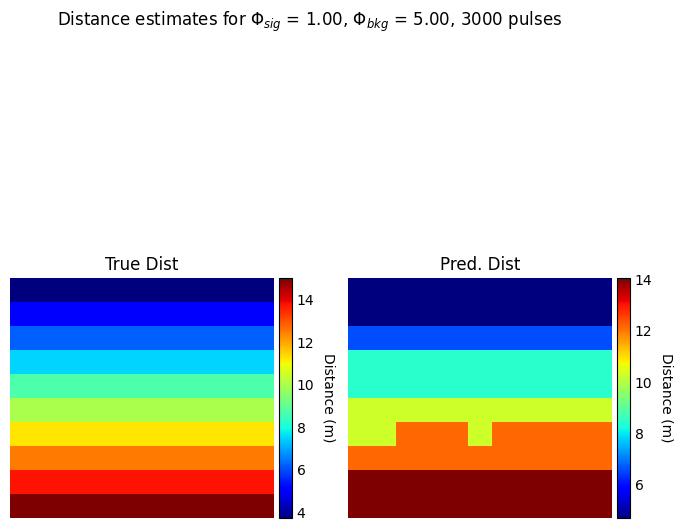

Customized 3D imaging pipeline
With SPCSim user can create a customized 3D imaging pipeline with fine control over
The simualted 3D scene properties
Active illumination (laser) properties
Intrinsic properties of the imaging sensor/camera
Histogramming methods to compress the data captured by the imaging sensor
Post-processing pipelines to obtain 3D scene distance from sensor measurements
[97]:
from SPCSim.data_loaders.perpixel_loaders import PerPixelLoader
from SPCSim.data_loaders.transient_loaders import TransientGenerator
from SPCSim.utils.plot_utils import plot_transient, plot_ewh, plot_edh, plot_edh_traj
import matplotlib.pyplot as plt
from SPCSim.sensors.dtof import RawSPC, BaseEWHSPC, BaseEDHSPC, HEDHBaseClass, PEDHBaseClass, PEDHOptimized
from SPCSim.postproc.ewh_postproc import PostProcEWH
from SPCSim.postproc.edh_postproc import PostProcEDH
from mpl_toolkits.axes_grid1 import make_axes_locatable
import torch
import numpy as np
Set the 3D scene properties
[105]:
num_unique_distance_values = 10 # @param {type:"slider", min:1, max:1000, step:1}
min_distance_fraction = 0.25 # @param {type:"slider", min:0, max:0.9, step:0.05}
max_distance_fraction = 1 # @param {type:"slider", min:0.2, max:1, step:0.05}
signal_bkg_illumination_combinations = [[1,5]] # @param {type:"raw"}
num_independent_simulation_runs_per_combination = 11 # @param {type:"slider", min:1, max:1000, step:1}
device = 'cpu' # @param ["cpu", "cuda"]
Set laser properties
[10]:
laser_time_period_ns = 100.0 # @param {type:"number"}
num_time_bins = 1000 # @param {type:"integer"}
laser_FWHM_ns = 2 # @param {type:"number"}
Select the sensor properties
[98]:
sensor_id = "BaseEWHSPC" # @param ["RawSPC", "BaseEWHSPC", "BaseEDHSPC", "HEDHBaseClass", "PEDHBaseClass", "PEDHOptimized"]
num_laser_pulses = 3000 # @param {type:"number"}
num_histogram_bins = 8 # @param {type:"number"}
num_output_timestamps = 1000 # @param {type:"number"}
sensor_id_dict = {
"RawSPC": RawSPC,
"BaseEWHSPC": BaseEWHSPC,
"BaseEDHSPC": BaseEDHSPC,
"HEDHBaseClass": HEDHBaseClass,
"PEDHBaseClass": PEDHBaseClass,
"PEDHOptimized": PEDHOptimized
}
Select experiment index to plot results
[23]:
illumination_condition_index = 0 # @param {type:"integer"}
distance_value_index = 0 # @param {type:"integer"}
independent_run_index = 0 # @param {type:"integer"}
ROW = PixLdr.get_row(sbr_idx = illumination_condition_index,
dist_idx = distance_value_index)
COL = independent_run_index
[106]:
################################################################################
########## Setting the 3D scene parameters #####################################
################################################################################
# Simulating results for distance = 0.1*dmax
PixLdr = PerPixelLoader(
num_dists=num_unique_distance_values,
min_dist = min_distance_fraction,
max_dist = max_distance_fraction,
tmax = laser_time_period_ns,
sig_bkg_list = signal_bkg_illumination_combinations,
num_runs=num_independent_simulation_runs_per_combination,
device = device)
# Generate the per pixel data
data = PixLdr.get_data()
################################################################################
### Generating the transient for set scene conditions and laser parameters #####
################################################################################
# Creating transient generator with laser time period of 100ns, FWHM 1 and with
# laser time period divided into 1000 equal time-bins
tr_gen = TransientGenerator(Nr = PixLdr.Nr,
Nc = PixLdr.Nc,
N_tbins = num_time_bins,
tmax = PixLdr.tmax,
FWHM = laser_FWHM_ns)
# Using the get function to generate the transient
# for a given distance, albedo, intensity, and illumination condition
phi_bar = tr_gen.get_transient(data["gt_dist"],
data["albedo"],
data["albedo"],
data["alpha_sig"],
data["alpha_bkg"])
Nr, Nc, N_tbins = phi_bar.shape
device = PixLdr.device
################################################################################
########## Initialize object for selected sensor class #########################
################################################################################
SensorClass = sensor_id_dict[sensor_id]
if sensor_id == "RawSPC":
spc1 = SensorClass(
Nr,
Nc,
num_laser_pulses,
device,
num_time_bins,
num_output_timestamps)
else:
spc1 = SensorClass(
Nr,
Nc,
num_laser_pulses,
device,
num_time_bins,
num_histogram_bins)
################################################################################
########## Capture the dToF data for given exposure time #######################
################################################################################
captured_data = spc1.capture(phi_bar)
fig, ax1 = plt.subplots(1,1,figsize=(8,4))
################################################################################
########## Plot the data captured by the sensor data ###########################
########## & ############################################################
######## Reconstr 3D distance estimates using post-processing pipeline #########
################################################################################
if sensor_id == "RawSPC":
raw_data = captured_data["time_stamps"]
ewh_data = captured_data["ewh"]
phi_bar1 = phi_bar[ROW, COL, :].cpu().numpy()
ts = raw_data[ROW, COL, :].cpu().numpy().flatten()
xaxis = torch.arange(0.5,1+N_tbins).to(torch.float)
hist,_ = torch.histogram(raw_data[ROW,COL,:], xaxis)
hist2 = ewh_data[ROW,COL,:]
plot_transient(ax1, hist2.cpu().numpy(), plt_type = '-b', label="Captured EW histogram")
plot_transient(ax1, hist.cpu().numpy(), plt_type = '--r', label="Timestamps histogram")
plot_transient(ax1, phi_bar[ROW,COL,:].cpu().numpy()*spc1.N_output_ts/np.mean(np.sum(phi_bar.cpu().numpy(), axis=-1)), plt_type = '-g', label="True Transient")
ax1.set_xlabel('Bins')
ax1.set_ylabel('Frequency')
ax1.set_title(r'Histogram of raw data for $\Phi_{sig}$ = %.2f, $\Phi_{bkg}$ = %.2f'%(data["alpha_sig"][ROW, COL], data["alpha_bkg"][ROW, COL]))
ax1.legend()
elif sensor_id == "BaseEWHSPC":
ewh_data = captured_data["ewh"].cpu().numpy()
phi_bar = phi_bar.cpu().numpy()
ewh_bins_axis = torch.linspace(0,N_tbins-N_tbins//num_histogram_bins,num_histogram_bins)
plot_ewh(ax1, ewh_bins_axis, ewh_data[ROW, COL,:], label = "EWH histogram", color = 'w')
plot_transient(ax1, phi_bar[ROW, COL,:]*spc1.N_pulses, plt_type = '-r', label="True Transient")
ax1.set_xlabel("Time (a.u.)")
ax1.set_ylabel("Photon counts")
ax1.set_title(r'%d-bin Equi-depth histogram for $\Phi_{sig}$ = %.2f, $\Phi_{bkg}$ = %.2f'%(num_histogram_bins, data["alpha_sig"][ROW, COL], data["alpha_bkg"][ROW, COL]))
plt.legend()
postproc_ewh = PostProcEWH(
Nr,
Nc,
num_time_bins,
laser_time_period_ns,
device
)
dist_idx, pred_dist = postproc_ewh.ewh2depth_t(captured_data["ewh"])
fig2, ax2 = plt.subplots(1,2, figsize=(8,8))
im = ax2[0].imshow(data["gt_dist"].cpu().numpy(), cmap = 'jet')
ax2[0].axis('off')
ax2[0].set_title("True Dist")
divider = make_axes_locatable(ax2[0])
cax = divider.append_axes('right', size='5%', pad=0.05)
cbar = fig.colorbar(im, cax=cax, orientation='vertical')
cbar.ax.tick_params(length=0)
cbar.set_label('Distance (m)', rotation=270, labelpad=15)
im = ax2[1].imshow(pred_dist, cmap = 'jet')
ax2[1].axis('off')
ax2[1].set_title("Pred. Dist")
divider = make_axes_locatable(ax2[1])
cax = divider.append_axes('right', size='5%', pad=0.05)
cbar = fig.colorbar(im, cax=cax, orientation='vertical')
cbar.ax.tick_params(length=0)
cbar.set_label('Distance (m)', rotation=270, labelpad=15)
fig2.suptitle(r'Distance estimates for $\Phi_{sig}$ = %.2f, $\Phi_{bkg}$ = %.2f, %d pulses'%(data["alpha_sig"][ROW,RUN], data["alpha_bkg"][ROW,RUN], spc1.N_pulses))
fig2.savefig("DistanceOutput.png")
elif sensor_id == "BaseEDHSPC":
oedh_data = captured_data["oedh"].cpu().numpy()
gtedh_data = captured_data["gtedh"].cpu().numpy()
ewh_data = captured_data["ewh"].cpu().numpy()
phi_bar = phi_bar.cpu().numpy()
ymax = ((np.sum(ewh_data[ROW,COL,:])/num_histogram_bins)).item()
plot_edh(oedh_data[ROW,COL,:],
ax1,
ymax = ymax)
plot_edh(gtedh_data[ROW,COL,:], ax1,
tr = phi_bar[ROW, COL,:]*spc1.N_pulses,
# crop_window= tr_gen.FWHM*1.5*tr_gen.N_tbins*1.0/tr_gen.tmax, # uncoment this line to zoom into peak
ymax = ymax, ls='--')
ax1.set_title(r'Final %d-bin Oracle EDH boundaries for $\Phi_{sig}$ = %.2f, $\Phi_{bkg}$ = %.2f, %d pulses'%(num_histogram_bins,
data["alpha_sig"][ROW,COL],
data["alpha_bkg"][ROW,COL],
spc1.N_pulses))
elif sensor_id in ["HEDHBaseClass","PEDHBaseclass", "PEDHOptimized"]:
pedh_data = captured_data["edh"].cpu().numpy()
gtedh_data = captured_data["gtedh"].cpu().numpy()
ewh_data = captured_data["ewh"].cpu().numpy()
edh_list = captured_data["traj"]
phi_bar = phi_bar.cpu().numpy()
edh_list = np.array(edh_list)
ymax = ((np.sum(ewh_data[ROW,COL,:])/num_histogram_bins)).item()
plot_edh(pedh_data[ROW,COL,:],
ax1,
ymax = ymax)
plot_edh(gtedh_data[ROW,COL,:], ax1,
tr = phi_bar[ROW, COL,:]*spc1.N_pulses,
# crop_window= tr_gen.FWHM*1.5*tr_gen.N_tbins*1.0/tr_gen.tmax,
ymax = ymax, ls='--')
ax1.set_title(r'Final EDH boundaries for $\Phi_{sig}$ = %.2f, $\Phi_{bkg}$ = %.2f, %d pulses'%(data["alpha_sig"][ROW,COL], data["alpha_bkg"][ROW,COL], spc1.N_pulses))
# fig.savefig("Temp.png")
fig_, ax_ = plt.subplots(1,1, figsize=(8,4))
plot_edh_traj(ax_, edh_list, gtedh_data[ROW,COL,1:-1], ewh_data[ROW,COL,:])
ax1.set_title(r'EDH CV trajectories for $\Phi_{sig}$ = %.2f, $\Phi_{bkg}$ = %.2f, %d pulses'%(data["alpha_sig"][ROW,COL], data["alpha_bkg"][ROW,COL], spc1.N_pulses))
plt.plot()
else:
print("Incorrect Sensor choice")
100%|██████████| 3000/3000 [00:15<00:00, 192.65it/s]
<ipython-input-106-851e9c33ae7a>:135: UserWarning: Adding colorbar to a different Figure <Figure size 800x800 with 3 Axes> than <Figure size 800x400 with 1 Axes> which fig.colorbar is called on.
cbar = fig.colorbar(im, cax=cax, orientation='vertical')
<ipython-input-106-851e9c33ae7a>:143: UserWarning: Adding colorbar to a different Figure <Figure size 800x800 with 4 Axes> than <Figure size 800x400 with 1 Axes> which fig.colorbar is called on.
cbar = fig.colorbar(im, cax=cax, orientation='vertical')

